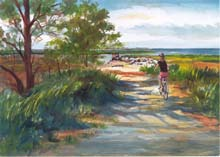

Bicycling Bicycling
The Cape has several paved bicycling trails that are remarkably
uncrowded. When you tire of the trails, take out the map and make
your own ride. If you don't have a bicycle, you can rent one at
many locations.
Short
Bike Rides by Edwin Mullen and Jane Griffith, published
by the Globe Pequot Press describes 26 bicycle rides on the Cape
mainland. It has maps and it's small enough to fit in your bicycle
basket.
The Cape Cod Bike Book
web site gives an overview of bicycling trails, and tells you how
to get the book by William E. Peace. This site has a good list of
bicycle shops that rent bicycles. Two convenient places to rent
bicycles are "Little Capistrano" (255-6515) near the rail
trail and Salt Pond Visitor Center in Eastham, and "Idle Times"(896-9242)
near the rail trail and Nickerson Park in Brewster.
The Cape Cod Rail Trail goes from
Dennis to Wellfleet. From Orleans to Wellfleet, the trail is fairly
new, very flat, very smooth, and largely in the sun. From Dennis
to Orleans, the trail is old and a little bumpy, fairly flat, and
largely under shady trees. There's a gap in Dennis and in Orleans
where you have to ride a ways on streets. Many maps show the rail
trail, and the National Seashore and Nickerson State Park have good
maps of the trail.
The National Seashore Visitor
Centers at Eastham and the Province Lands both have excellent bicycle
trails. Nickerson State Park in Brewster has bicycle trails. A short
bike trail is at Head of the Meadows in Truro.
|